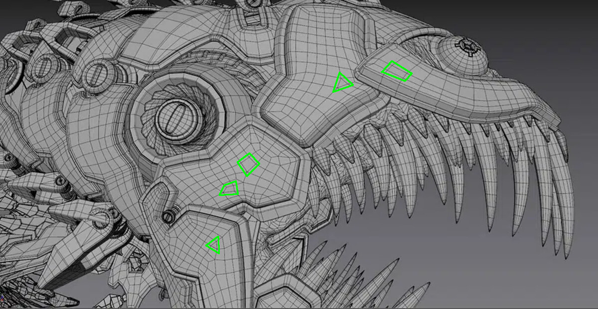

Once references have been collected, the next step is modeling.
The primary method of building three-dimensional shapes for real-time graphics applications is with a bunch of triangles (tris) or rectangles (quads):
That pyramid of 4 triangles is the most basic example, but the concept applies to even the most complex 3D models; this model is also composed entirely of tris and quads:

The convention exists for a variety of reasons, but in short, 2D shapes (particularly tris and quads) are just easier. The math required to calculate lighting, perspective, texturing mapping, and many other effects is more straightforward (and faster) to do with simple geometry.
To build your own models, you'll want a 3D modeling program. I used Blender and would highly recommend it for other beginners. It's open source and can do everything from modeling to animating to rendering.
Even within a program, there can be several 3D modeling techniques. I did something like box modeling with bits added on as need be:
As you can hopefully see (right click an image and click open in new tab to enlarge), the body of the arcade cabinet is one solid object made of quads and tris, and the buttons and joystick are smaller solid objects made of quads and tris.
I also experimented with creating models that are more like origami, like the body of the bike:
It's still made out of quads and tris, but none of the faces enclose a volume.
Here's a timelapse of me modeling a brick phone